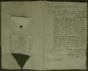

Christiaan Huygens. Facetten van een genie
De manuscripten
8 april 31 mei 2004
Tentoonstelling in de Universiteitsbibliotheek Leiden
10. Conservering van de brieven
Veel brieven uit de Huygens-collectie dragen duidelijk de sporen van hun geschiedenis. Aan vouwlijnen en plaatselijke vuilophoping is te zien hoe ze waren gevouwen bij het versturen. Soms zijn de brieven op die vouwen gescheurd. Een bijzonder soort schade ontstond al bij het openen van de brieven: het zegel kon een stuk papier meetrekken. Sommige brieven hebben gaatjes in de middenvouw, enkele met een restje garen; daaraan is te zien dat een gedeelte van de brieven in brievenboeken bewaard zijn. Veel schade aan de randen is ontstaan door berging in te krappe omslagen.
Conservering van beschadigd papier bestaat in het algemeen uit droogreinigen, herstellen van scheuren en verstevigen van zwakke delen met Japans papier en tarwestijfsel, en eventueel vlakken. De geschiedenis van het object wordt daarbij gerespecteerd. Dat betekent bijvoorbeeld dat de oorspronkelijke vouwen mogen blijven bestaan en dat sneden in het papier die horen bij het sluitsysteem van de brief niet worden gesloten, tenzij tekstverlies dreigt.
| 10.1. Brief van Aumale de Haucour
aan Constantijn Huygens Sr, ongedateerd. [HUG 37] –– De schade aan de onderrand is waarschijnlijk ontstaan nadat een aangeplakte strook papier is verwijderd, resten van die strook zijn nog zichtbaar en duiden op plaatsing in een brievenboek. – Het modelletje laat zien hoe de brief gevouwen en verzegeld was. |
|
|  | 10.2. Brief van Benjamin van de
Reene aan Constantijn Huygens Sr, gedateerd 18 november 1642. [HUG
37] –– Het driehoekig gat onderin de brief is niet ingestukt omdat het geen ‘gewone’ schade betreft, maar te maken heeft met het sluitsysteem van de brief. Het ontbrekende stuk papier zit onder het zegel. – Het modelletje toont hoe de brief gevouwen en verzegeld was. |
 |
|
| 10.3. Brief van Laurens Reael aan
Constantijn Huygens Sr, gedateerd 14 mei 1636. [HUG 37] –– De brief is beschadigd door messneden, die bij de sluittechniek van de brief horen. De sneden die door de tekst lopen, zijn wel verstevigd om risico’s bij het raadplegen te verkleinen, maar de sneden in de marge zijn niet behandeld. – Het modelletje toont hoe de brief gevouwen en verzegeld was. Door de sneden is een strook papier gehaald die middels het zegel is vastgemaakt. |
|
| 10.4. Brief van Maria Huygens aan
Constantijn Huygens Sr, gedateerd 22-23 januari 1661. [HUG 37] –– De brief was op de vouwen geheel doorgescheurd; op de foto is de toestand voor behandeling vastgelegd. De brief is schoongemaakt en gerepareerd.
|
|
| 10.5. Foto van een stapel onbehandelde brieven waarbij de randschade duidelijk te zien is. |
| vorige pagina | volgende pagina |